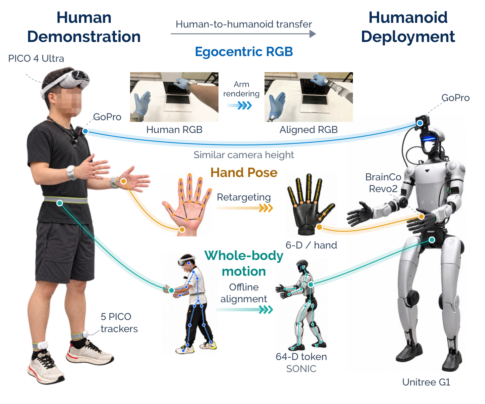
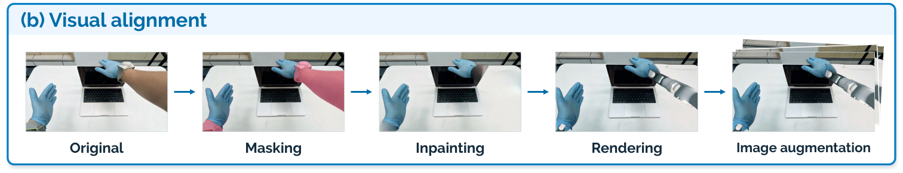

Local Coordinates Are Sufficient: Visual Navigation & Pose Generalization
- Reviewer mSNH: Q3
Why local coordinates are sufficient
We transfer coordinated motion through action alignment in local coordinates; the policy uses visual navigation to reach the appropriate position and orientation, and pose generalization to adapt its actions to variations in the robot’s position and orientation. Sec. 3.3 ↗
Visual navigation
In Pull Curtain, successful executions Task demonstrations ↗ illustrate learned turning and forward motion, including when to stop. Among 40 trials, 2 fail from turn-timing errors and 1 from early stopping (7.5%) Failure analysis ↗. These observations support the policy’s ability to guide whole-body movement through vision.
Pose generalization
In Open Fridge, successful executions Task demonstrations ↗ show that the policy can complete the task despite small variations in the robot’s position and orientation Evaluation setting ↗. Among 40 trials, 2 fail from heading drift and 1 from hand misalignment (7.5%) Failure analysis ↗. Performance under pose perturbations also improves with more training data Data-scaling results ↗. These observations support the policy’s ability to adapt to perturbations in the robot’s position and orientation.
Conclusion
For the tested tasks, action alignment in local coordinates is sufficient for motion transfer, with visual navigation and pose generalization allowing the policy to adapt execution to the robot’s position and orientation.
Contact-phase Stability
- Reviewer mSNH: Q3
Failure analysis
Among 40 trials per task, balance loss causes 1 failure in Open Fridge (2.5%) and 3 in Close Drawer (7.5%), during backward motion and drawer pushing, respectively. No failures are attributed to balance loss in Close Laptop or Pull Curtain. Failure analysis ↗
Conclusion
Balance loss causes 4 failures across 160 trials (2.5%), suggesting that instability during interaction is not a major source of failure in the tested tasks.
Object Forces & Closed-loop Tracking
- Reviewer mSNH: Q3
- Reviewer vfta: W1, Q2, S1
Why it works without simulated object forces
We perform offline action alignment in simulation without object interaction forces. The aligned motions are then executed by SONIC, whose closed-loop feedback corrects tracking deviations caused by external forces.
External-force test
We apply 0–20 N opposing forces while replaying the same motions with the same SONIC controller. At 20 N, position errors change from 1.80 to 2.09 cm in Open Fridge and from 2.78 to 3.72 cm in Pull Curtain.
Conclusion
Tracking accuracy changes only modestly under the tested external forces, supporting SONIC’s ability to compensate through closed-loop feedback. This supports the effectiveness of our offline action alignment despite not simulating object interaction forces, within the tested force range.
Position error (cm)
Orientation error (°)
Fixed-image Ablation
- Reviewer fQQ5: M1, Q3
Motivation: Test whether the policy uses changing visual input.
Setup: Compare recorded video with fixed images in simulation.
Conclusion: The unassisted laptop and curtain comparisons support the role of changing visual input.
Stage-wise & Full-task Success
- Reviewer mSNH: W3, Q1
- Reviewer vfta: W1, Q1, Q2
- Reviewer fQQ5: W2, Q2
We add subtask definitions, subtask and full-task success rates for four tasks under different action alignment settings, and failure-case analysis.
Stage-wise completion
Stage definitions
Failure analysis
D (Unit) + D (MLP), 40 trials per task (20 each). Percentages use all 40 trials.

Error Bars & Training Seed
- Reviewer mSNH: W3, Q1
- Reviewer vfta: W1, Q1
- Reviewer fQQ5: W2, Q2
Error bars: We add standard deviations (SDs) to Fig. 4 ↗ and Fig. 5 ↗ and Table 1 ↗ and Table 4 ↗, shown as error bars in the figures and ± SD in the tables.
Training seed: Within each task, all models use the same training seed. Appendix B.5 ↗
Study Scope & Visual Generalization
- Reviewer mSNH: W3, Q4
Evaluation setting
We train one policy per task. Testing uses the same objects and scenes, with random perturbations to object (e.g., laptop) and robot poses (positions and orientations). Appendix B.5 ↗
Research focus
We study whole-body loco-manipulation skill transfer from egocentric human data. Generalization to unseen objects, scenes, or tasks and instruction following are outside this research scope.
Data collectors
All demonstrations are collected alternately by two collectors.
Pose generalization
Performance under pose perturbations improves with more training data (Fig. 4 ↗), supporting within-task visual generalization. Our fixed-image ablation ↗ further supports the role of visual feedback in action prediction.
Zero-shot scope
As stated in the abstract and Secs. 3.1/4.1, zero-shot means transfer to the robot without target-task robot demonstrations, after task-specific training on human demonstrations. It does not refer to unseen-task generalization. Abstract ↗ · Sec. 3.1 ↗ · Sec. 4.1 ↗
Coordinated Whole-body Motion Transfer
- Reviewer mSNH: W1
Motivation: Transfer coordinated whole-body motion from human demonstrations.
Approach: Replace EgoHumanoid’s decoupled controller with SONIC’s whole-body tracker.
Problem: Direct online IK control conflicts with SONIC’s whole-body tracking and disrupts balance in the tested variants.
Solution: Use offline action alignment to preserve SONIC’s feedback control during execution.
Online IK failure examples
We test different degrees of mixing direct online IK control with SONIC control. All three variants remain unstable, supporting our choice of offline action alignment.
Visual alignment: EgoHumanoid uses depth-based reprojection and inpainting for visual alignment. We use a simpler, effective approach to reduce viewpoint gaps: similar camera heights and image augmentation. We additionally use robot-arm rendering to address appearance differences.
Hardware & Capture Setting
- Reviewer mSNH: W1
- Reviewer fQQ5: W1, Q1
Advantages
Action: We record human actions with VR motion capture. Unlike HuMI/BifrostUMI, we do not require handheld grippers or matched robot grippers. This supports dexterous hands and avoids gripper-related hardware and setup costs, with potential for scalable collection.
Vision: We use only egocentric images instead of wrist views, providing body-centered scene context for loco-manipulation, such as Pull Curtain.
Challenges
Action: Differences in human/robot hand and body geometry make action alignment more demanding.
Vision: Different camera viewpoints and human/robot arm appearances create substantial visual gaps.
Contributions
Action: Two-stage offline action alignment: K followed by D.
Vision: Visual alignment combines similar camera heights and image augmentation for viewpoint differences with robot-arm rendering for appearance differences.
Conclusion
A direct comparison without accounting for these different hardware settings and action and visual alignment challenges would be unfair.

Action Alignment with a General Controller
- Reviewer mSNH: W1
Advantages
We reuse the same frozen, open-source SONIC controller across tasks, supporting scalable transfer without task-specific controller training.
Challenges
Controller endpoint tracking errors are a major source of the action gap. Training or tuning a controller on downstream demonstrations can reduce this gap and ease action alignment, as in HuMI. BifrostUMI also trains its own tracker. Reusing a general controller requires addressing these errors without downstream controller adaptation.
Contributions
Our two-stage offline action alignment compensates for the action gap without tuning SONIC, retaining a shared, reproducible controller.
Conclusion
Scalable transfer should not depend on retraining the controller for each new task. Comparisons must therefore account for whether downstream controller training reduces the action alignment burden.
More details about D and response model effectiveness
- Reviewer mSNH: W2, Q2
- Reviewer fQQ5: W2, Q2
Motivation: Evaluate the effectiveness of D and the response model on real-world tasks.
Setting: 200 human demonstrations per task; π0.5 policies with SONIC. Compare H+K, H+K+D (Unit), and H+K+D (MLP) using task scores (mean ± SD) and stage-wise success (Tables 1–2).
Conclusion: The results suggest that D and the learned response model are particularly beneficial for tasks requiring precise interaction or stable whole-body coordination.
Human vs. Robot Demonstrations
- Reviewer mSNH: W3
- Reviewer vfta: W2, Q3
- Reviewer fQQ5: M2, Q4
Key results
Comparing 200 human vs. 50 robot demonstrations:
Close Laptop: Task score is lower (53.33% vs. 63.33%), but full-task success is 50% for both. The score gap reflects differences in intermediate-stage completion.
Pull Curtain: Both task score (53.33% vs. 56.67%) and full-task success (30% vs. 35%) are close.
Conclusion
Human demonstrations have lower sample efficiency but achieve similar full-task success. They require 76.36% less collection labor per demonstration.
Human demonstrations also enable in-the-wild collection without a robot, avoiding robot procurement and maintenance for collection.
Fair comparisons must consider performance, data requirements, collection/processing costs, in-the-wild collection, and robot procurement and maintenance costs. Complete processing cost ↗
Stage-wise results
Candidate Selection & Processing Cost
- Reviewer mSNH: W4, Q2
- Reviewer vfta: W2
- Reviewer fQQ5: M2, Q4
D contribution
Only 1.84% of inputs are rejected, while 97.1% select D; 1.11% retain H and none retain K (task averages). Table 11 ↗ The low rejection rate and frequent selection of D indicate that most demonstrations can be retained and benefit from D.
Complete processing cost
Table 10 ↗ reports K/D time measured within each worker process. Table 11 adds total elapsed time per task: 0.50 h on average, using four workstations and 12 worker processes. This includes task-specific data preparation ↗, action alignment, validation and candidate selection, including processing of rejected inputs.
These results indicate efficient processing of the complete pipeline under this parallel setup.
Visual Alignment
- Reviewer mSNH: W1
- Reviewer fQQ5: W1, Q1
Motivation: Bridge viewpoint and arm-appearance gaps for transfer without target-task robot demonstrations.
Setup: Render robot arms from aligned motion and apply image augmentation.
Conclusion: Visual alignment improves task performance, while viewpoint differences remain.

Visual alignment ablation
Optimization Details
- Reviewer mSNH: W4
We specify the optimization neighborhood and regularization in Eq. 6: per-frame token bounds, joint preservation, token and joint-correction smoothness, and the IK prior.
Appendix A.2 ↗ provides the equations, weights for regular and conservative D, and the optimization schedule.
Task-specific Data Preparation
- Reviewer mSNH: W4
- Reviewer vfta: W2, Q3
We clarify the task-specific trajectory and hand-command processing in Appendix A.4 ↗:
- Hand-command processing: Binarize hand commands for Open Fridge and Pull Curtain to simplify policy learning.
- Trajectory processing: Apply light filtering to reduce noise in the recorded trajectories.
- Trailing-segment trimming: Remove incidental demonstrator movements at the end of Pull Curtain recordings.
These are minor data-preparation steps intended to simplify learning and reduce noise. We do not expect them to alter our main conclusions, although their individual effects have not been isolated through ablation.
Real-world Demonstrations
- Reviewer vfta: W1, Q1
- Reviewer fQQ5: W2, Q2
Motivation: Show human-to-humanoid skill transfer on real hardware.
Setup: Execute four tasks with policies trained on aligned human demonstrations.
Conclusion: These examples demonstrate successful arm and foot manipulation without target-task robot demonstrations.